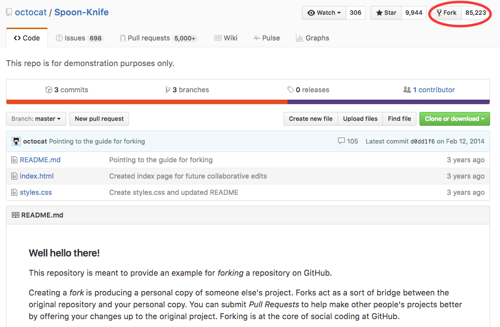
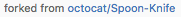
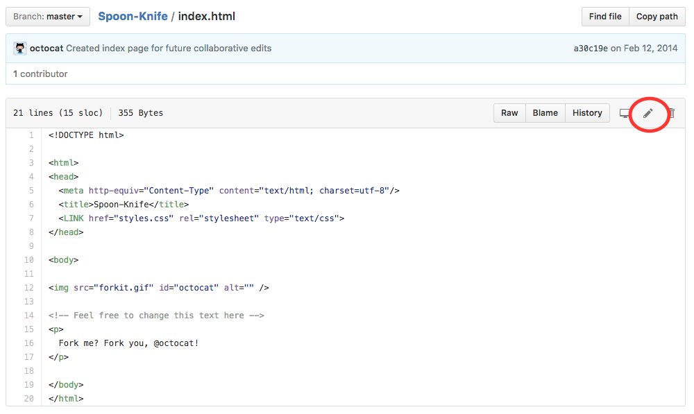
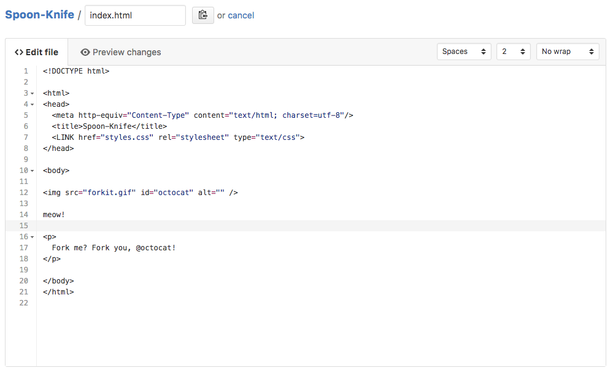
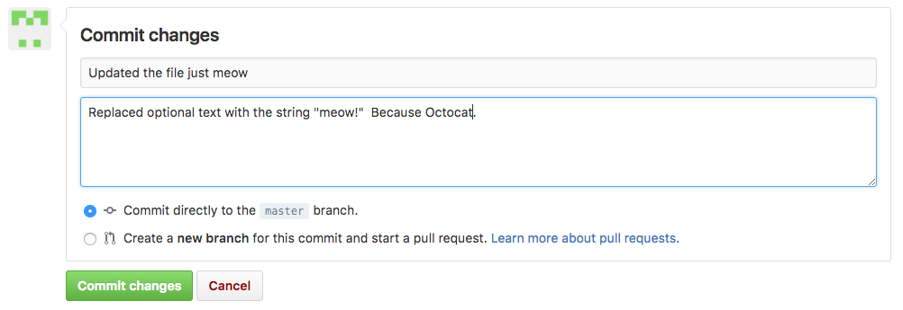
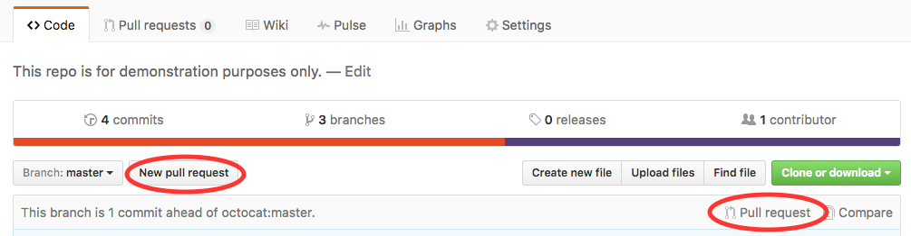
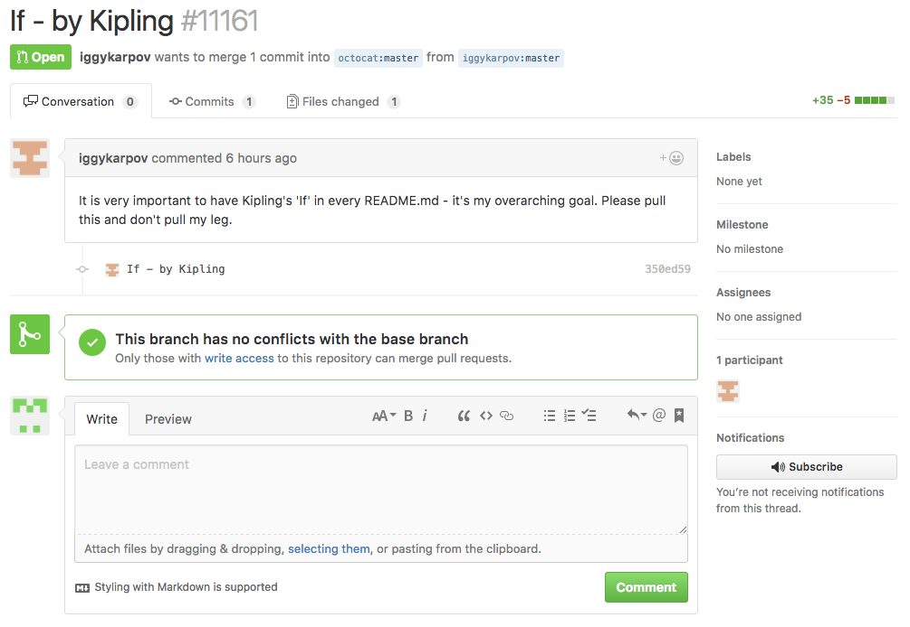
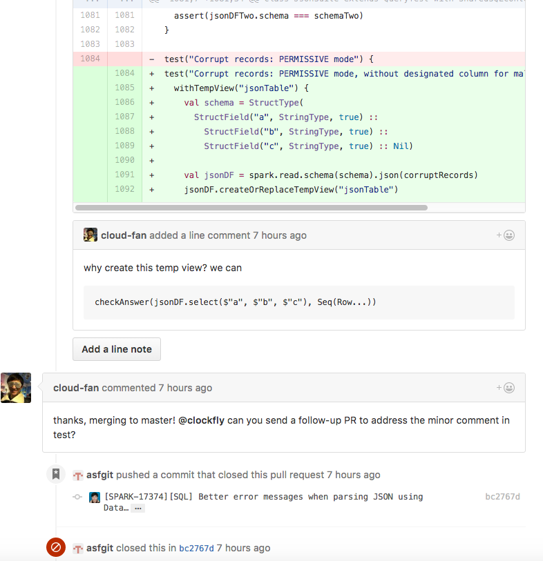

In order to collaborate using branches, everyone will need to have
full read/write access to the GitHub repository. Sometimes it’s not a
great idea to grant another user that level of access, although you’d
still like to be open to their contributions. GitHub provides that
type of functionality through Forks.
Forking
In this framework, one (or a few) users have ownership of all changes
that will occur to the repository. A user outside of this core
ownership group can contribute to a project by Forking (creating a
copy of the repo in their own user space) and then making a
cross-repository Pull
Request (similar but not identical to the Pull Requests discussed in
the prior section).
- Note: Forking is similar to cloning - you are making a copy of a repository. However, your copy isn’t linked to the original repository. So edits that you make are pushed to the forked version in your own user space (https://github.com/<your Github username).
Once you finish your changes on your forked version, you can submit a code comparison to the original repository called a “pull request”. The original author gets an email, reviews the changes you’ve made, and then decide whether or not to accept them into their repository.
In Summary
- Fork a repository that you want to contribute to
- Clone it to desktop
- Make edits, commit, then push (sync) to the forked copy
- Create a pull request
- Have owner comment on changes/accept the pull request
In this hypothetical scenario, I want to contribute to the repo Spoon-Knife from my friend octocat (FYI - Octocat is Github’s mascot). As in the steps above, I fork it to make a copy in my own repository. I’ll go to Octocat’s repo and click the Fork button on the top right corner of the screen.

I will be returned a screen asking where you want to fork the repository. By default, unless I had joined a github organization, I will only be able to pick my Github user name. Afterwards, you should be presented an image of a menu with a fork in it while the repo is being created. When it is done, look at the upper left side of the screen and under the repo name you should see this:

Which describes your repo as being forked from another repo. Perfect! Now I’ll contribute to his file “index.html”

and add the line “meow” where they have suggested via the “Edit” button that looks like a pencil.

Note that Github asks me to save this change by creating a commit:

I’m going to make Octocat aware of this change via the pull request button. First I’ll go back to my forked copy’s main page (<username>/Spoon-Knife) and look for a pull request button.

When I hit pull request, I get a confirmation page with:
- The two versions to be compared: the Octocat version (octocat:master)
and my version (<username>:master). Note that unlike
the Pull Requests in the last section, cross-repository requests
include the relevant repository names for additional clarity.
- My commit history (right below the calendar).
- The difference in index.html.
Once I go ahead and hit “Create pull request” Octocat will get an email explaining that I made a change that I’d like him (or her?) to look at. He can go to the pull request to respond and comment if he has more questions. If he likes it, he can merge the change into his repository.
Let’s check out an example that someone has already sent Octocat. Because Spoon-Knife is a public repo, anybody can access and view this pull request. Note that iggykarpov is requesting that 1 commit be merged that changes 1 file. He provides a description of the proposed change explaining why it should be merged. Github notes that this PR has not conflicts and can be merged automatically. It also gives everyone an opportunity to comment on the changes.

To demonstrate how conversations can happen around a pull request let’s look at a real-life example. You may have noticed that we have already viewed the repository for Apache Spark, a relatively new open-source project. People contribute to this project using the forking workflow we have described here and submitting pull requests. Here you can see a productive suggestion made at the end of the pull request at https://github.com/apache/spark/pull/14929

This should give you a glimpse into the power of the “Hub” portion of Github for facilitating collaboration on code.
If you ever need a quick review of this workflow, Github provides a nice summary:
https://guides.github.com/activities/forking/
 Git Foundations
1.0
Git Foundations
1.0